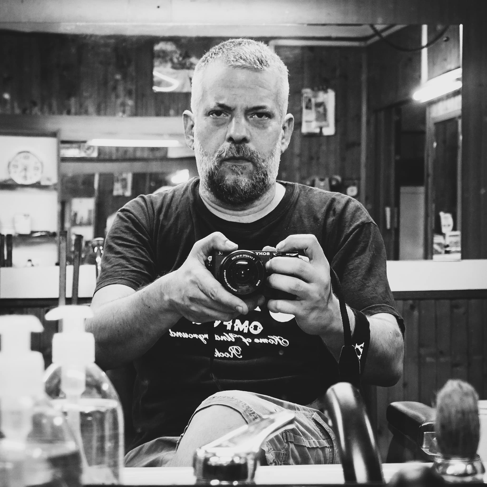
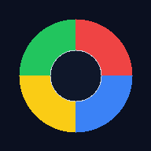
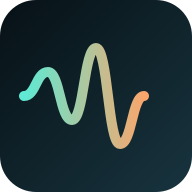

ICT Project Management
Gestione end-to-end di progetti ICT: dalla definizione degli obiettivi alla consegna, con coordinamento di team multidisciplinari e controllo continuo di tempi, costi e qualità.

Professionista con oltre 15 anni di esperienza tra tecnologia, project management e innovazione organizzativa. Psicologo del lavoro con background tecnico, coordino progetti complessi in ambito HR Tech, trasformazione digitale e fabbricazione, con attenzione all'impatto sociale e alla formazione. Ho operato in contesti corporate, cooperativi e creativi, unendo visione strategica, metodo operativo e capacità analitica.
Il mio approccio è pratico, orientato alla sperimentazione e all'autonomia progettuale. Ho diretto il FabLab Torino e promosso iniziative educative come FabLab for Kids e Torino Mini Maker Faire, con l'idea che la tecnologia sia uno strumento creativo e accessibile. Ho sviluppato soluzioni digitali per eventi (Self-O-Matic), insegnato coding e robotica e accompagnato percorsi di trasformazione digitale. In questo sito raccolgo progetti professionali e creativi che rappresentano il mio modo di lavorare.
Gestione end-to-end di progetti ICT: dalla definizione degli obiettivi alla consegna, con coordinamento di team multidisciplinari e controllo continuo di tempi, costi e qualità.
Supporto strategico per introdurre soluzioni digitali concrete, semplificare i processi e rafforzare la governance tecnologica.
Progettazione e sviluppo di soluzioni software su misura, dal concept al rilascio, con un approccio iterativo e orientato ai risultati.
Percorsi formativi su ICT, coding e innovazione digitale, progettati per trasferire competenze subito applicabili nei contesti reali.
Progetti ideati e sviluppati all'interno di FabLab Torino.

Robot educativo STEM open source. Basato su Arduino, integra display, sensori ambientali, buzzer, luci RGB, sensore ultrasonico e testa rotante programmabile.
vai al sito
Social camera per eventi con scatto automatico e pubblicazione in tempo reale. Una soluzione efficace per attivazioni, fiere e comunicazione live.
vai al sito
Progetto FabLab: personalizzazione della cassettiera IKEA Nordli con tavolino estraibile realizzato tramite pannello tagliato a laser.
vai al sitoProgetti web e mobile sviluppati per browser, con giochi, utility, simulatori e strumenti pensati anche per uso su dispositivi mobili.
Ricerca voli Ryanair A/R con filtri su partenza, destinazione, budget, durata e link condivisibile dei risultati.
apriClassico Forza 4 contro CPU con selezione difficolta e nuova partita rapida.
apri
Versione web del gioco Simon: ripeti la sequenza colori con modalita strict opzionale.
apri
Generatore audio con parametri regolabili in tempo reale (volume, filtro e controlli sonori).
apri